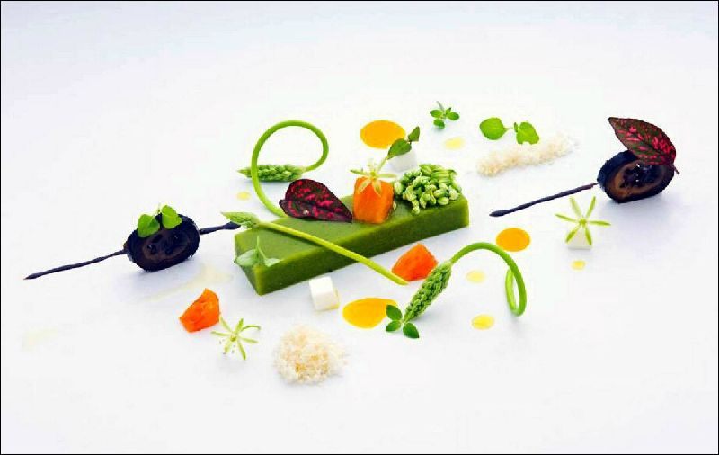
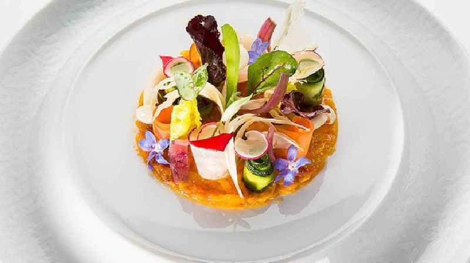
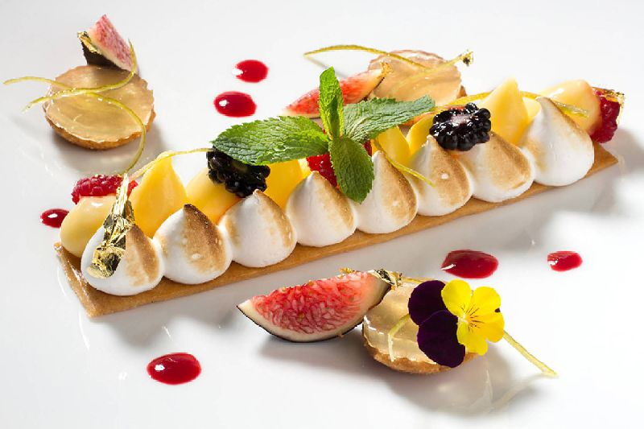
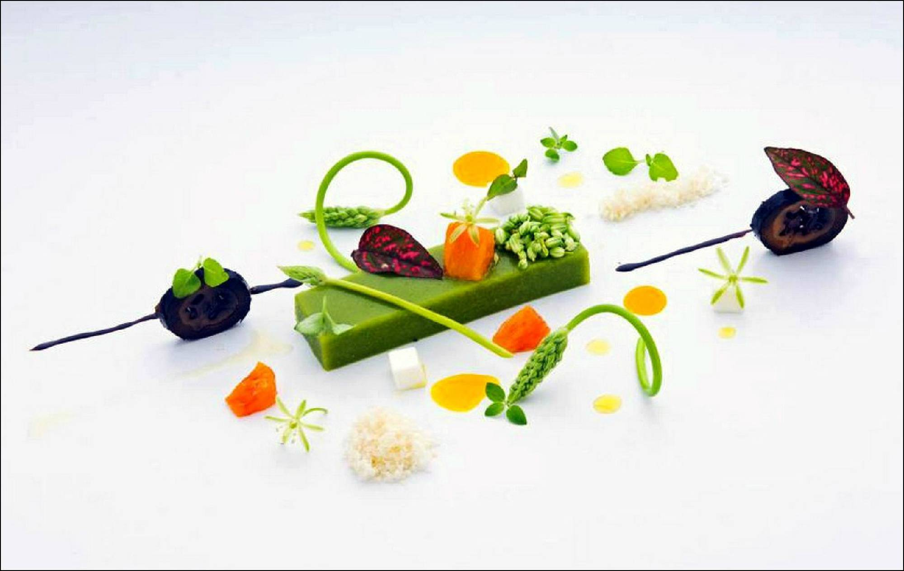
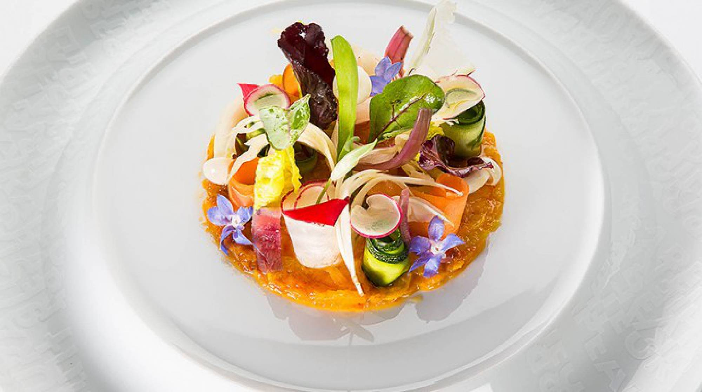
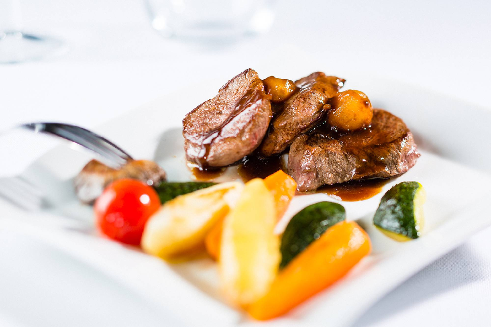
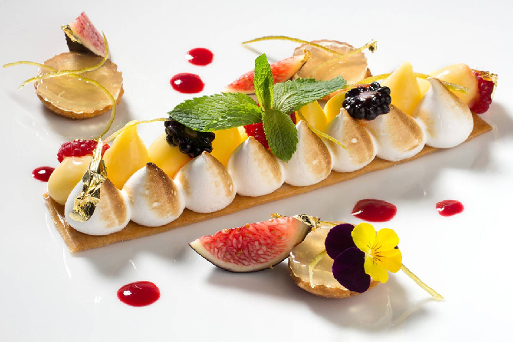

360menus
ENTREES
PATES
SALADES
MENUS
MENUS COMPLET
VERRINES
POISSONS
DESSERTS
free wysiwyg web page generator
Plats Du Jours
Plus de 360 Menus tout pres pour vous







Previous
Next
×
Close
Tranche de cou de porc Sauce Robert
Spirales
Ratatouille
Blanquette de veau à l’ancienne
Riz créole
Salades panachées
Gigot d'agneau aux herbes de Provence
Knöpli
Navets persillés
Cuisse de poulet diablé
Pommes frites
Epinards en branches
Entrecôte de cheval Sauce à l’échalote
Nouillettes
Salade
Piccata Sauce napolitaine
Spaghetti au beurre
Salade mêlée
Emincé de canard aux épices
Couscous
Bâtonnets de carottes
Civet de chevreuil Sauce poivrade
Mousselines au céleri
Bouquetière automnale
Dos de colin aux légumes grillés
Riz pilaf
Salade
Rôti de dindende
Spaghetti "Sauce tomate"
Choux fleurs
Haut de cuisse de poulet
Pommes rissolées
Salade
Rumpsteak de cheval
Pommes frites
Ratatouille
Gratin de poisson Bordelaise
Riz créole
Epinards
Beefburger "Sauce aux poivres"
Country cuts
Salade ou potage
Gratin de coquillettes à la courge
Salade de rampon aux œufs
Escalope de poulet panée au sésame , quartier de citron
Quinoa à la brunoise d’ananas
Julienne de légumes étuvée
Cuisse de poulet tandoori
Riz parfumé aux petits légumes
Salade verte et trévise
Emincé de bœuf au basilic
Pommes de terre mousseline
Rosettes de brocoli vapeur
Salade de fruits à la fleur
Couscous végétarien
Saucisson vaudois , moutarde
Lentilles verte du Puy et chou blanc braisés
Faux filet de cheval cuit au four
Pommes de terre croquettes panées
Carottes Vichy
Beignet de Vinzel, cornichons et petits oignons
Beignet au fromage frit
Salade mêlée
Penne rigate, sauce au Cantadou aux herbes
Grana Padano râpé
Salade verte
Ragoût de cuisse de dinde à la moutarde
Polenta Bramata
Courges en dés persillés
Risotto `terreni alla maggia’ verde, Grana Padano râpé
Avec fond d’artichaut et julienne de laitue
Salade mêlée
Epaule de porc rôtie , sauce brune citronnée
Nouilles fines
Quartiers de fenouil safranés
Scalopine aux Câpres et Citron
Beignets de Chou-Fleur
Pommes sautées
Brochette de Volaille
Oignons Aigre-doux
Chips de Pommes-de-Terre
Filet de Thon au Sésame
Friture de Poireaux
Salade de Pommes-de-Terre et
Oignons rouges
Boulettes d'agneau à la sauce tomate
Spirales
Epinards en branches
Poulet grillé
Pommes-de-terre lyonnaises
Carottes et petits pois
Curry de boeuf à l'indienne
Riz créole
Pois mange tout, brocolis
Escalope de volaille au cantadou
Pommes-de-terre natures
Chou rave mornay
Stroganoff de boeuf
Riz créole
Choux de Bruxelles
Hachis parmentier (boeuf)
Salade de tomates,maïs et concombres persillés
Filet de St-Pierre St-Jénois
Pommes-de-terre natures
Ratatouille
Omelette au fromage
Cornettes à l'huile d'olives
Carottes en bâtonnets
Penne à la viande hachée de boeuf et légumes
Tomate cherry à l'italienne
Sauté de poulet au miel
Riz au jasmin
Mélange asiatique maison
Estouffade de boeuf
Pommes-de-terre purée
Haricots verts
Roulé de sole à la Florentine
Pommes-de-terre natures
Ragoût de cerf aux airelles
Nouilles
Jardinière de légumes
Beignets de sole du pacifique
Sauce tartare
Riz sauvage
Epinards à la crème
Fricandeau de boeuf à l'oriental
Semoule aux pois chiches
Crudité de courgettes et tomates cherry
Curry thaï (poulet)
Riz basmati
Légumes asiatiques
Gratin aux deux poissons
Pommes-de-terre à l'eau
Epinards sautés aux pignons
Beef burger et son bun au sésame
Pommes de terre cuntry
Salade verte
Cordon bleu de poulet
Pommes country
Carottes glacées
Sauté de bœuf au paprika
Semoule de couscous
Choux de Bruxelles
Saucisse à rôtir grillée
Sauce lyonnaise
Rösti
Tomate à l'étuvée
Cuisse de poulet aux olives
Riz aux légumes
Brocolis aux amandes
Rôti de porc au romarin
Polenta
Courgettes sautées
Feuilleté au jambon
et champignons
Jardinière de légumes
Salade ou pomme
Fiori al limone
Sauce crème
Salade ou pomme
Risotto aux champignons
Salade ou pomme
Trofie à la sauce du chef
(jambon cru et sauge)
Salade ou pomme
Ravioli aux quatres fromages
Sauce crème
Salade ou pomme
Emincé de veau à la zürichoise
Riz créole
Brocolis à l'étuvée
Salade
Jambon à l'os
Sauce Madère
Gratin dauphinois
Haricots verts
Salade
Gigot d'agneau rôti
Jus aux herbes
Blé ebly
Carottes Vichy
Salade
Escalopine de porc au citron
Tagliatelle
Tomate florentine
Salade
Emincé de poulet au curry
Riz créole
Jardinière de légumes
Salade
Bœuf aux légumes
Riz parfumé
Salade
Poulet sauce cacahuètes
Riz parfumé
Salade
Porc sauce Hoïsin
Riz parfumé
Salade
Crevettes sautées au basilic thaï
Riz parfumé
Salade
Agneau Masaman
Riz parfumé
Salade
Saucisse aux choux
Papet Vaudois
Salade verte
Tranche de porc
Sauce moutarde
Nouillette au beurre
Ratatouille niçoise
Brochette mixed-grill
Pommes boulangère
Petits pois à la française
Palette de bœuf braisé
Farfalle
Salade de saison
Filet de flet
Sauce vin blanc
Pommes vapeur
Epinards en branche
Crêpe farcie aux courgettes
Boulgour
Salade mêlée
Spätzli aux légumes
et champignons
Salade de saison
Piccata de tofu
Sauce tomate
Pâtes au beurre
Salade
Lasagne aux légumes
Salade panachée
Fricassée de canard
Aux olives et tomates séchées
Polenta
Fusilli au pistou frais
Salade mêlée
Carbonade flamande
Pommes puree
Endives braisée
Nouilles sautées
Au poulet
Sauce satay et légumes Shanghai
Rôti de veau
Pommes lyonnaises
Carottes persillés
Saute de porc aux fruits secs
Semoule de couscous
Salade verte
Cordon bleu de porc
Spaghetti a la tomate
Salade de chou rouge
Tartiflette
Salade de carottes
Meli mélo de poisson
Sauce nantaise
Riz safrane
Magret de canard au miel
Gratin dauphinois
Haricots verts
Saucisse a rôtir
Stump aux carottes
Croûte aux champignons
Salade verte
Épaule d agneau rôti au thym
Gratin savoyard
Chou de Bruxelles
Picatta de porc milanaise
Spaghetti ala tomate
Salades de endives
Tartare de boeuf
Pommes frites
Fricassée de canard
Aux olives et tomates séchées
Polenta
Carbonade flamande
Pommes puree
Endives braisée
Nouilles sautées
Au poulet
Sauce satay et légumes Shanghai
Rôti de veau
Pommes lyonnaises
Carottes persillés
Saute de porc aux fruits secs
Semoule de couscous
Salade verte
Cordon bleu de porc
Spaghetti a la tomate
Salade de chou rouge
Pilon de poulet laqué aux epices
Pomnes country
Risotto d ebly au jambon de parme
Rémoulade de céleri
Demi coquelet au citron
Pommes frjtes
Salade
Lapin a la moutarde ancienne
Polenta
Cuisse de poulet tandoori
Purée pt douce
Petit légume
Gigot d agneau
Pommes frites
Flageolets
Curry de boeuf au lait de coco
Riz basmati
Jambon a l'os
Gratin dauphinois
Haricots verts
Choucroute
Garnie
Pommes natures
Poulet au rhum et orange
Riz aux raisin
Saucisse a rôtir
Stump aux épinards
Émincés de porc au curry
Galette de rosti
Salade verte
Émincé de boeuf au paprika
Riz
Salade vert
Penne aux chorizo
Et poivrons
Fajitas de poulet
Et sa garniture
Potées de lentilles
Saucisson vaudois
Pommes nature
Émincé de poulet
Sauté au rhum
Riz blanc
Nouilles au légumes
Rôti d agneau
Coucous aux raisins
Bavette a l échalotes
Pommes persillée
Petit pois carottes
Rôti de veau
Pommes lyonnais
Carottes vichy
Fricassée de canard au olives
Polenta
Tomate rôti
Endives au jambon
Pommes purée
Cordon bleu de porc
Spaghetti a la tomates
Duo de tortellini
Sauce crème basilic
Salade mêle
Rôti de porc aux Prunes
Riz
Côtes de bête
Spaghettis carbonara
Salade de betterave rouge
Osso buco cremoulata
Pommes purées
Petit pois carottes
Filet de cabillaud bonne femme
Riz pilaf
Tomates cerise’s
Escalope de porc aux marsala
Pomme purées
Romanesco
Penne à la rabiata
Salade
Filet de merlan a l estragon
Riz
Brocolis
Côte de porc charcutière
Galette de rosti
Légumes du jour
Cuisse de lapin au cidre et pommes
Polenta
Salade de mais
Gigolette de poulet farcie aux épinards
Tagiatelle
Tomates au four
Légume farcies
Semoule de couscous
Escalopes de porc panne
Spaghetti a la tomate
Darne de saumon
Riz sauvage
Pois gourmands
Filet de truite au four
Pommes nature
Épinards
Filet d autruche au poivre
Pommes frites
Fenouils braisé
Rôti de veau aux abricots
Tagiatelle
Jardinier de légumes
Fricandeau au vin rouge
Pommes boulangers
Haricots a l ail
Boeuf aux carottes
Pommes purées
Cailles rôti
Pommes virgule
Carottes persillés
Tendrons de veau chasseur
Pâtes
Salade du jour
Sauté de boeuf bourguignon
Carottes au beurre
Cornette
Fricassée de canard
Aux olives et tomates séchées
Polenta
Fusilli au pistou frais
Salade mêlée
Nouilles sautées
Au poulet
Sauce satay et légumes Shanghai
Rôti de veau
Pommes lyonnaises
Carottes persillés
Risotto d ebly au jambon de parme
Rémoulade de céleri
Rôti de porc aux Prunes
Riz
Côtes de bête
Gigolette de poulet farcie aux épinards
Tagiatelle
Tomates au four
Saute de veau marengo
Pommes boulangeres
Salade verte
Jambon de campagne
Salade de pommes de terre tiède
Tagliatta de Bœufs
Tartiflette
Salade Verte
Civet de chevreuil grand veneur
Tagliatelles chou-rouge
Émince de bœuf hongrois
purée de patate douce
Saltimbocca de porc
purée aux herbes
carottes vichy
Suprême de pintade aux chanterelles
écrase de pdt
Parisienne de bœuf Café de Paris
pommes country
tomates pro
Filet de poulet basquaise
Tagliatelles
Confit de canard
Gratin de pdt
Haricots verts
Filet de poulet forestière
riz pilaf
Saute de porc thai
riz basmati
Navarin agneau à orientale
couscous
Saute de dinde façon corse
Polenta
Burger
pommes country
Chili con carne
salade verte
Choucroute garnie
pdt
Colombo de poulet
couscous au légumes
Coquelet basquaise
pommes frites
Cotes de porc valaisanne
poêlé de légumes
Couscous poulet Merguez
Poulet yassa
semoule
Achards de légumes
Curry rouge de poulet
pommes Rissoles
Émince de porc au caramel
riz parfume
Émince de poulet à la citronnelle
légumes asiatique
pdt vapeur
Émincé de volaille gingembre et citronnelle
riz basmati
Filet de porc braise à la sauge
polenta
romanesco
Jarret de porc sale aux lentilles
Mijote de bœuf au lait de coco ,paprika
riz au thé vert
Nasi goreng
Osso bucco de cerf
spatzli
Papet vaudois
saucisse au choux
Rôti de porc a la moutarde
couscous légumes
Rougail de saucisse
pommes purée
Saute agneau au cumin
tagliatelles
haricots verts
Saucisse escargot jus au thym
gratin de pdt
Bœuf carotte au vin rouge
tagliatelles
Fricandeau au vin rouge
Pommes boulangers
Haricots a l ail
Homme